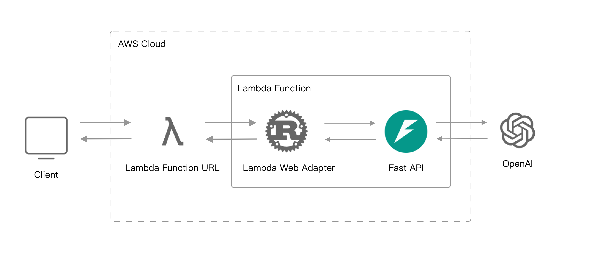
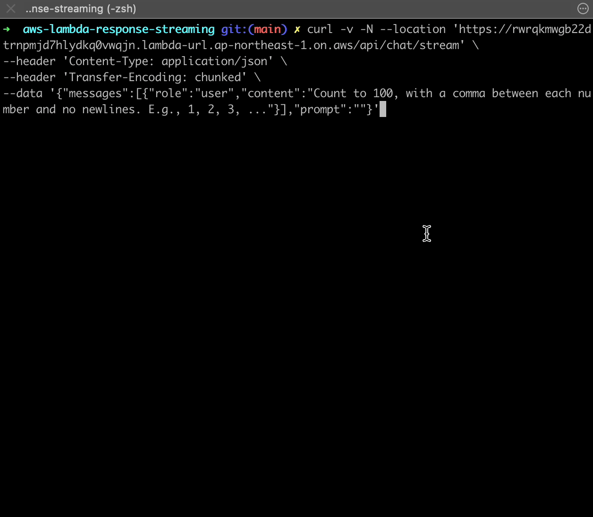

This example shows streaming response from OpenAI completions with FastAPI on AWS Lambda.
Demo: https://github.com/RaoHai/aws-lambda-response-streaming
Credit to aws-lambda-web-adapter

How does it work?
This example uses FastAPI provides inference API. The inference API endpoint invokes OpenAI, and streams the response. Both Lambda Web Adapter and function URL have response streaming mode enabled. So the response from OpenAI are streamed all the way back to the client.
This function is packaged as a Docker image. Here is the content of the Dockerfile.
FROM public.ecr.aws/docker/library/python:3.12.0-slim-bullseye
COPY --from=public.ecr.aws/awsguru/aws-lambda-adapter:0.8.1 /lambda-adapter /opt/extensions/lambda-adapter
# Copy function code
COPY . ${LAMBDA_TASK_ROOT}
# from your project folder.
COPY requirements.txt .
RUN pip3 install -r requirements.txt --target "${LAMBDA_TASK_ROOT}" -U --no-cache-dir
CMD ["python", "main.py"]Notice that we only need to add the second line to install Lambda Web Adapter.
COPY --from=public.ecr.aws/awsguru/aws-lambda-adapter:0.8.1 /lambda-adapter /opt/extensions/In the SAM template, we use an environment variable AWS_LWA_INVOKE_MODE: RESPONSE_STREAM to configure Lambda Web Adapter in response streaming mode. And adding a function url with InvokeMode: RESPONSE_STREAM.
FastAPIFunction:
Type: AWS::Serverless::Function
Properties:
PackageType: Image
MemorySize: 512
Environment:
Variables:
AWS_LWA_INVOKE_MODE: RESPONSE_STREAM
FunctionUrlConfig:
AuthType: NONE
InvokeMode: RESPONSE_STREAM
Policies:
- Statement:
- Sid: BedrockInvokePolicy
Effect: Allow
Action:
- bedrock:InvokeModelWithResponseStream
Resource: '*'Build and deploy
Run the following commends to build and deploy this example.
sam build --use-container
sam deploy --guidedTest the example
After the deployment completes, curl the FastAPIFunctionUrl.
curl -v -N --location '${{FastAPIFunctionUrl}}/api/chat/stream' \
--header 'Content-Type: application/json' \
--header 'Transfer-Encoding: chunked' \
--data '{"messages":[{"role":"user","content":"Count to 100, with a comma between each number and no newlines. E.g., 1, 2, 3, ..."}],"prompt":""}'